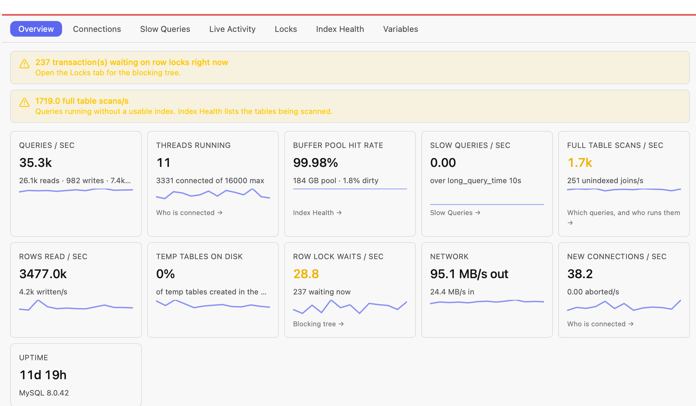
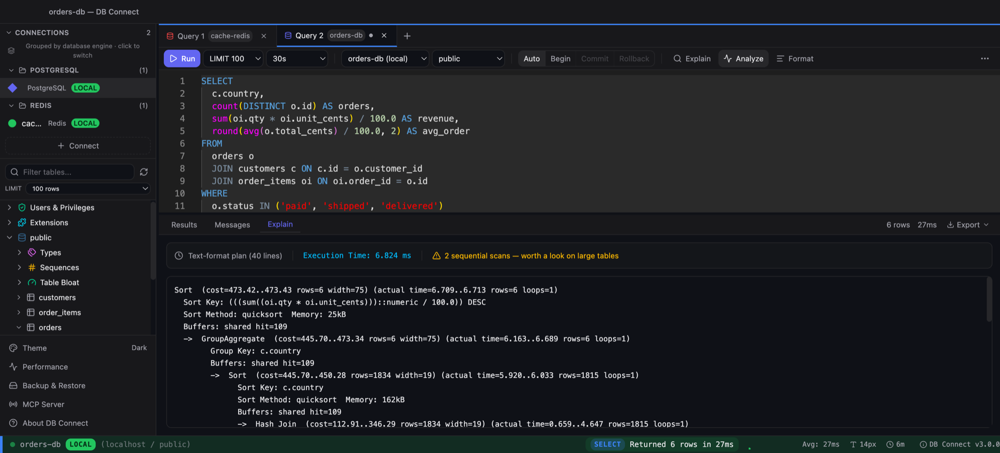

How I cut a production MySQL server from 90% to 30% CPU — without dropping a feature
Numbers are from my own production server; your results depend on your workload.
For the last four months I've used DB Connect every day on the MySQL fleet behind a production e-commerce platform. When I started, the main server was running at around 90% CPU. Today it sits around 30%. Nothing was switched off to get there: no feature was removed and no use case was dropped. The same product does the same things, and the database does far less work to serve them.
I built the tool, so read this with that in mind. I'm not writing it to say the tool is magic. The method is ordinary, and I want to show it as a loop you can repeat. Each step below is one screen in DB Connect.
1. Start with rates, not counters
Performance → Overview samples the server every five seconds and shows each value as a real rate over real elapsed time. Queries per second are split into reads, writes and prepared statements, next to rows read, full table scans, unindexed joins, threads running and row lock waits. A health strip at the top says in plain words what looks wrong and which tab to open next.
The tiles that matter most for CPU are rows read and full table scans. A server can handle the same number of queries per second while reading a small fraction of the rows, and that difference is mostly where CPU goes.

2. Click the full-table-scan tile
That tile opens a list of the statement digests that ran without a usable index. Expand one and you see who runs it (user@host), a sample statement, and a button that copies it into the editor for EXPLAIN. Knowing who runs a query matters as much as the query itself, because it tells you which service owns it. In my case the honest answer to "do we need this query?" was always yes, which is why nothing was cut.
3. Read the plan, then measure it
EXPLAIN shows the access type, the key the optimizer picked and how many rows it expects to examine. ALL on a large table is the usual suspect. EXPLAIN ANALYZE, on MySQL 8.0.18 and later, actually runs the statement and reports measured time, actual rows and loops for each operator, which is where estimates and reality part ways. Because it runs the query, I used it on a replica or at quiet times.

4. Design the index, and try it before you commit to it
The Index Manager shows the indexes a table already has, including functional and prefix ones, so you can extend an existing index instead of piling on a near-duplicate. Every index costs something on writes, so I aimed for the fewest indexes that fixed the most digests. Building an index on a big table is real work for the server, so schedule it for a quiet window.
Since 3.5.0, Index Health → Workload reads the slow-query digests, proposes composite indexes with the expected gain, and lets you trial each one as an invisible index that the optimizer ignores for normal traffic. That arrived after most of this work. If I were starting today, I'd start there.
5. Compare the plan before and after
Before adding an index, I saved the current plan as a baseline. After adding it, I ran EXPLAIN again. The diff shows access type, chosen key and rows examined for each table, with an improved or regressed verdict. Changing ALL to ref counts as a win even when the row estimate barely moves, and the reverse counts as a regression even when the estimate drops. That stopped me from fooling myself with estimates.
6. Look for sessions that look idle but aren't
Performance → Connections groups the process list by user@host, user, host or database. Its age threshold also applies to open transactions, so a session that has been asleep for two seconds but has held a transaction open for minutes is flagged idle in transaction. Those sessions hold locks and undo history while looking harmless. The real fix is in the application code that forgot to commit. Killing the session goes through the production confirmation.
7. Watch the rates drop, then go again
After each change I went back to Overview. Full table scans and rows read fall first, and CPU follows. Then I picked the next digest from the top of the list. No single change did the work; each pass took a few minutes once the loop felt familiar.
Try it on your own server
- Install DB Connect. It's free and needs no account: macOS DMG, Windows installer,
brew install --cask shubhesh07/db-connect/db-connect, orcurl -fsSL https://github.com/shubhesh07/db-connect/releases/latest/download/install.sh | bash. - Add your MySQL connection (SSH tunnel and SSL are in the form). Tag it production so every write asks first, or make it read-only.
- Open Performance → Overview and let it sample for a few minutes.
- Click the full-table-scan tile, pick the top digest, and run EXPLAIN (and EXPLAIN ANALYZE on a replica).
- Design the index in the Index Manager or the Workload advisor, compare plans before and after, check Connections for idle-in-transaction sessions, and watch the Overview rates.
The "who runs it" detail comes from performance_schema.events_statements_history_long. That consumer is off by default in MySQL, so enable it if that column is empty. On managed services, check your parameter group.
More on the MySQL side of DB Connect is on the MySQL client page.